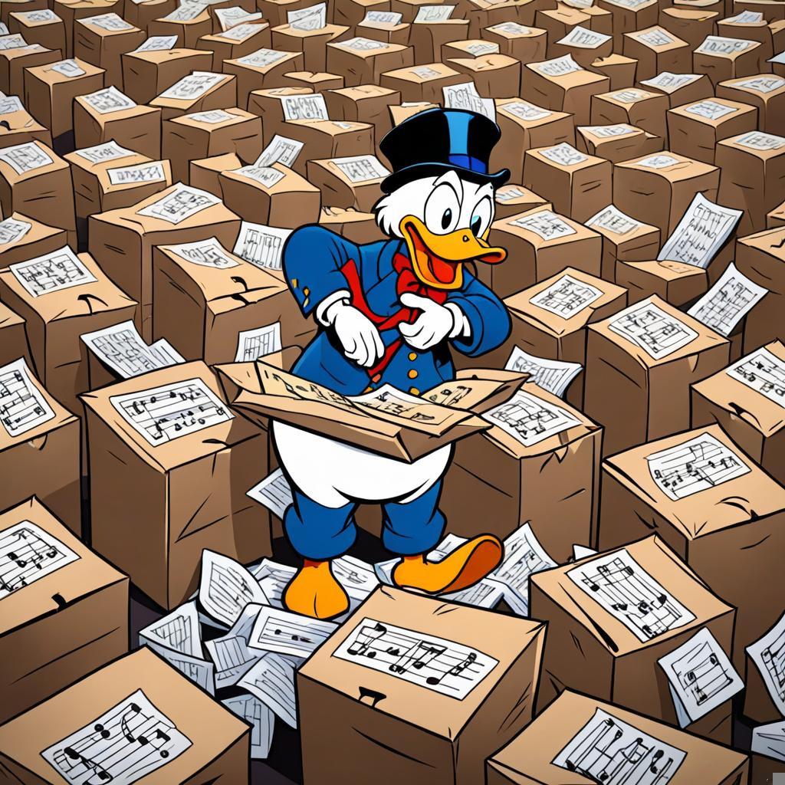
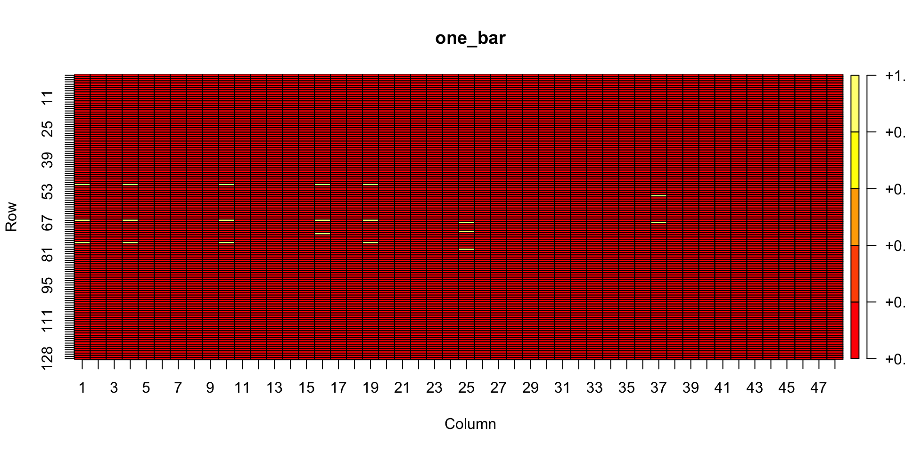
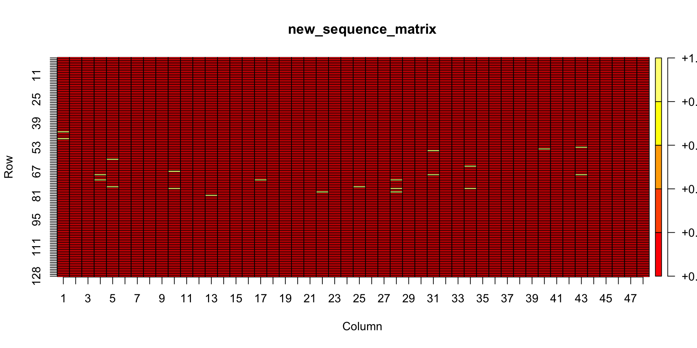
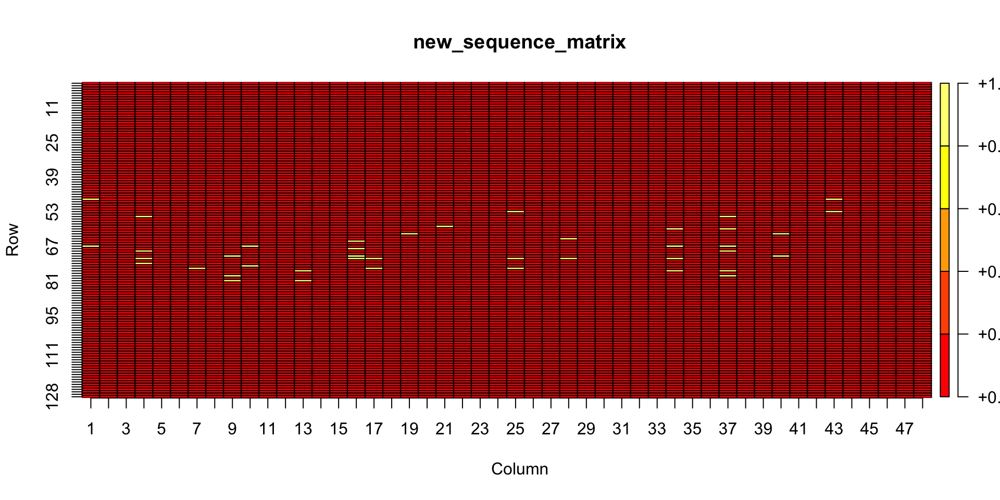
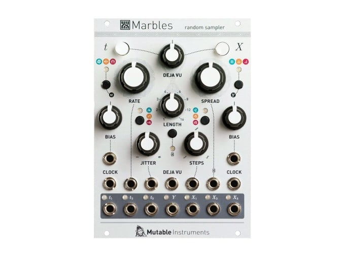
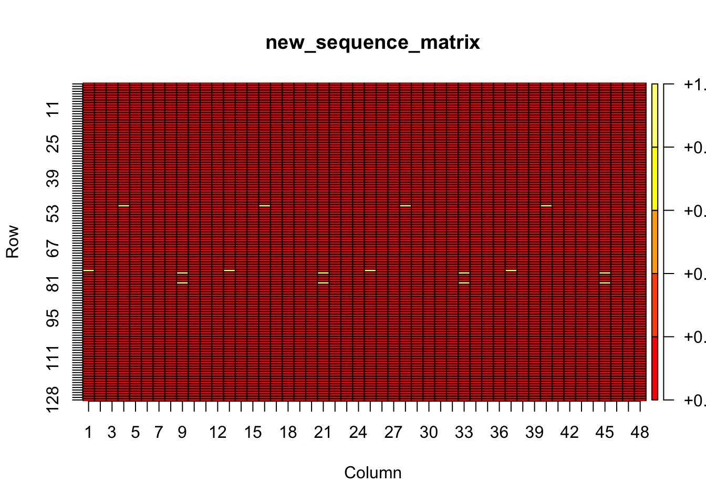

MIDI analysis, bags of notes, and probabilistic generation
midi
nlp
matrix
rstats
Still in an exploratory phase. Comments on matrix representation for MIDI, and opportunities for probabilistic playback.
Author
Matt Crump
Published
February 5, 2024
Show the code
from diffusers import DiffusionPipelinefrom transformers import set_seedfrom PIL import Imageimport torchimport randomimport sslimport osssl._create_default_https_context = ssl._create_unverified_context#locate library#model_id = "./stable-diffusion-v1-5"model_id ="dreamshaper-xl-turbo"pipeline = DiffusionPipeline.from_pretrained( pretrained_model_name_or_path ="../../../../bigFiles/huggingface/dreamshaper-xl-turbo/")pipeline = pipeline.to("mps")# Recommended if your computer has < 64 GB of RAMpipeline.enable_attention_slicing("max")prompt ="cartoon musical notes in bags. Scrooge mcduck hoarding bags of musical notes. A huge room with a pile of musical notes. ducktales."for s inrange(30):for n in [5,10]: seed = s+21 num_steps = n+1 set_seed(seed) image = pipeline(prompt,height =1024,width =1024,num_images_per_prompt =1,num_inference_steps=num_steps) image_name ="images/synth_{}_{}.jpeg" image_save = image.images[0].save(image_name.format(seed,num_steps))

cartoon musical notes in bags. Scrooge mcduck hoarding bags of musical notes. A huge room with a pile of musical notes. ducktales. - Dreamshaper v7
Over the past few posts I’ve been exploring probabilistic MIDI generation derived from note probabilities in existing MIDI files, using R.
Aside from having a bit of fun with this, I have a musical interest in finding out whether this approach can be inspiring to my own playing somehow, and in terms of my day job as a cognition researcher, I have an interest in pushing my particular method of choice into this arena as a way to understand the method from a new perspective. This post is mainly notes to self along with some R code.
Bags of notes
I’m representing midi files in one bar increments using a technique borrowed from language processing and semantic cognition research, sometimes called “bags of words” (Landauer and Dumais 1997). The technique represents chunks of written language as an n-gram frequency vector. For example, take a book and find all of the unique words in the book. Create a matrix with the same number of columns as unique words in the book. Split the book up into “bags”, which is a collection of words of some size. For example, the bag size could be at the sentence level or paragraph level. Let’s say paragraphs. For each paragraph count how many times each word appears in the paragraph. Finally, create a frequency count vector for the paragraph that has zeros for all words not found in the paragraph, and the individual frequency counts for all words in the paragraph. Repeat as necessary for all bags of words. This procedure creates a document x term matrix that represents aspects of how words co-occur with other words in natural language. I’ve been doing something similar with midi files.
As this isn’t an academic paper, I won’t review much more literature, but suffice it to say, several variations on the “bags of words” approach have been used for MIDI representation and analysis, especially to aid MIDI similarity analysis.
My current ’bags of notes” representation is as follows.
Split a midi file into bars
Choose a unit for temporal resolution (e.g., quarter notes, eighth notes, down to the smallest possible representation, midi ticks).
Create a note by time matrix. If the midi file has 96 ticks per beat, then the matrix will have 128 rows (for each possible midi note 0-127), and 96 x 4 = 384 columns.
For each note occurrence in a bar, assign a 1 to the “note on” location in the matrix. Otherwise, assign a 0.
This allows a midi file to be represented as “bags of notes” in successive note x time frequency matrices. Although I am presently disregarding note length, the resulting matrix contains all of the information necessary to reconstruct the note on messages back into MIDI format.
I have some background modeling aims that involve training theories of learning and memory on patterns from MIDI files, so I’m also choosing representations that would work for those models. In this case, I am most interested in training a MINERVA-II style model on MIDI patterns (Hintzman 1984). That model represents patterns in individual memory trace as feature vectors. I’d like to put bars of music as individual patterns into the model, and to do that I concatenate the note x time matrix into a single feature vector.
I’ve decided to proceed by examples instead.
Mario example
In [this previous post](https://homophony.quest/blog/35_2_3_24_matrix_midi/) I imported the Super Mario overworld music, represented it in the above matrix format, and then generated probabilistic versions of the music. My plan here is to walk through the example in a little bit more detail, and then consider methods for potentially improving the musicality of generated sequences.
The following code reads in the overworld.mid file, and converts it to a matrix. Let’s take a closer look.
#import midi using miditapyrtest_midi <- pyramidi::miditapyr$MidiFrames("all_overworld.mid")#import using midomido_import <- pyramidi::mido$MidiFile("all_overworld.mid")# to R dataframedfc <- pyramidi::miditapyr$frame_midi(mido_import)ticks_per_beat <- mido_import$ticks_per_beat# unnest the dataframedf <- pyramidi::miditapyr$unnest_midi(dfc)############################################### convert to matrix# grab track 1track_1 <- df %>%filter(i_track ==0, type %in%c("note_on","note_off") ==TRUE) %>%mutate(total_time =cumsum(time)) %>%filter(type =="note_on")time_steps <-seq(0,max(track_1$total_time),8)total_bars <-round(length(time_steps)/48)+1bars <-rep(1:total_bars,each=48)bar_steps <-rep(1:48,total_bars)metric_tibble <-tibble(time_steps = time_steps,bars = bars[1:length(time_steps)],bar_steps =bar_steps[1:length(time_steps)])track_1 <- track_1 %>%mutate(time_markers =0,bars =0,bar_steps =0) for(i in1:dim(track_1)[1]){ track_1$time_markers[i] <-which(time_steps %in% track_1$total_time[i])}# get bar divisions, add them to track_1for(i in1:dim(track_1)[1]){ get_timestep <- time_steps[track_1$time_markers[i]] track_1$bars[i] <- metric_tibble %>%filter(time_steps == get_timestep) %>%pull(bars) track_1$bar_steps[i] <- metric_tibble %>%filter(time_steps == get_timestep) %>%pull(bar_steps)}# assign intervals to the barsmusic_matrix <-matrix(0,ncol = (48+128+(48*128)),nrow =max(track_1$bars))for(i in1:max(track_1$bars)){ bar_midi <- track_1%>%filter(bars == i) one_bar <-matrix(0,nrow=dim(pyramidi::midi_defs)[1],ncol=48)for(j in1:dim(one_bar)[1]){ one_bar[bar_midi$note[j],bar_midi$bar_steps[j]] <-1 } pitch_vector <-rowSums(one_bar) time_vector <-colSums(one_bar) pitch_by_time <-c(one_bar)#concatenate_vector music_vector <-c(pitch_vector,time_vector,pitch_by_time) music_matrix[i,] <- music_vector}
The first bar of the midi file
The table shows a tibble of the first bar. I’ve added a few columns to code which bars the notes are occurring (not represented in a midi file), along with when each note occurs inside the bar. In this case, I’m using 8 ticks as the smallest unit of time inside a bar.
The big code chunk has a loop that processes all bars into a vector representation. Below, I unpack this and describe each step.
This code chunk takes the notes from a midi tibble that pertain to a single bar (e.g., the table above), creates an empty note by time interval matrix, and then assigns the notes in the bar to their respective intervals.
Show the code
# take a bar from the tibblebar_midi <- first_bar# make a note by time unit matrixone_bar <-matrix(0,nrow =dim(pyramidi::midi_defs)[1],ncol =48)# assign 1s to note locations in timefor (j in1:dim(one_bar)[1]) { one_bar[bar_midi$note[j], bar_midi$bar_steps[j]] <-1}
The note x time matrix is 128 rows by 48 columns. There are 0-127 possible notes in MIDI, and I divided one bar (4/4 time) into 48 individual slices of time. The note occurrences in the first bar of mario are coded as 1s in the matrix.
Here is a plot of the matrix showing note locations. It looks like a typical piano roll.
Show the code
library(plot.matrix)plot(one_bar)

Counting and concatenating
I create three vectors that will be appended together as the final feature vector for a bar of music.
The first two are frequency summarizers. The pitch vector takes the sum across the rows of the matrix. This yields a single vector with 128 elements corresponding to each note. The values are simply the counts of each note in the bar. The time vector takes the column sums, and provides a count of each temporal unit occurrence in the matrix. These summary representations will be useful later on for conditionalizing sequence generation based on notes and time in general.
The last vector concatenates the matrix into a single vector by starting at the first column, and then appending column after column, until the matrix is one long vector.
Finally, I append the pitch vector, the time vector, and the pitch x time vector into a single vector, called the music vector.
The above steps are applied to all of the bars in a midi file, and the resulting music feature vector is added to a matrix. For mario, I get a 37 (bars) by 6320 (features) matrix.
Oooh, and it can be plotted! Hurrah for the plot.matrix library!
The above matrix has a few different properties, but the main one is that it counts how often particular notes occur in particular units of time across all of the bars of music. And, aside from the fact that I threw out the the note off information, this matrix representation is pretty much the same as the original MIDI file, so it is possible to convert back to a MIDI file from this matrix representation.
However, the matrix representation provides interesting opportunities for manipulating MIDI. Today I am focusing on generating sequences from the statistical structure of a musical corpus. I’ll take the above matrix as a small corpus of musical bars.
Note x time probabilities
In previous posts where I generated some “mario-esque” sequences, I only got as far as generating them based on fairly simple, unconditionalized probabilities.
For example, columns 177 to 6320 in the music matrix contain the note x time frequency vectors for each bar. We can compute the total number of occurrences of all individual features by summing that whole part of the matrix. The answer is 901 note x time features occurred across all of mario.
What about individual note x time features, how often did they occur? We can compute the column sums. This vector has too many numbers to print, but here’s a sense of how it looks (y-axis is frequency counts).
The vector of proportions can be treated as probabilities and used to generate new notes in time based on this statistical structure. R has a convenient function for this called rbinom(). The goal is to produce a vector with the same length as the probability vector, but populated with 1s and 0s, where the 1 is a note occurrence and a 0 is the absence of a note.
This code chunk generates a new vector of note x time features based on the probabilities, restores the vector to a matrix format, and then plots the matrix of notes as a piano roll.
Show the code
# generate new vector based on probabilitiesnew_sequence <-rbinom(n =length(note_times_prob),size =12,prob = note_times_prob)# ensure any element greater than 1 is set to 1new_sequence[new_sequence >1] <-1#new_sequence_matrix <-matrix( new_sequence,ncol =48,nrow =128,byrow = F)library(plot.matrix)plot(new_sequence_matrix)
The new sequence is generated from independent probabilities. Essentially every note is sampled based on the probability that it appeared in a particular time slot across the whole corpus of bars. This creates a sonic mishmash where very global statistics of how notes appear in time across bars determine which notes get sampled and when they are placed in time.
The size parameter of the rbinom() function controls how many trials are simulated by the binomial sampling process, which controls the total number of notes sampled into a new bar.
One option is to set the size parameter to the mean number of notes that are found per bar in the corpus. I get about 24.
And, using 24 as the size parameter generates new bars that should have some more notes:
Show the code
# generate new vector based on probabilitiesnew_sequence <-rbinom(n =length(note_times_prob),size =24,prob = note_times_prob)# ensure any element greater than 1 is set to 1new_sequence[new_sequence >1] <-1#new_sequence_matrix <-matrix( new_sequence,ncol =48,nrow =128,byrow = F)library(plot.matrix)plot(new_sequence_matrix)

Or, this one has a size of 48, and starts looking even more busy:
Show the code
# generate new vector based on probabilitiesnew_sequence <-rbinom(n =length(note_times_prob),size =48,prob = note_times_prob)# ensure any element greater than 1 is set to 1new_sequence[new_sequence >1] <-1#new_sequence_matrix <-matrix( new_sequence,ncol =48,nrow =128,byrow = F)library(plot.matrix)plot(new_sequence_matrix)

A eurorack digression
As a quick side note, in terms of sonic exploration, it would be so fun to get matrix manipulation of midi for probabilistic sequence generation into a eurorack format.
One of my favorite modules to play with is Marbles by Mutable Instruments.

This module is a random CV generator for time and pitch, and it can do some things in the direction I’m headed. For example, you can play in a series of notes, and it will calculate pitch frequencies, and then playback notes based on the sampled frequencies. That’s pretty cool.
The documentation for Marbles even hints at a secret “markov” mode which is more similar to what I’m doing here:
Once I figure out what I’m doing in R, I wonder how easy it would be to get these algorithms working in a eurorack module…hmmm.
Alternative note and time feature generation
The matrix of bars also has pitch vectors and time vectors that summarize counts within their respective dimensions. These vectors can be turned into probabilistic generators as well.
Show the code
pitch_probabilities <-colSums(music_matrix[,1:128])/sum(music_matrix[,1:128])time_probabilities <-colSums(music_matrix[,129:(128+48)])/sum(music_matrix[,129:(128+48)])# get new pitchesnew_pitches <-rbinom(n =length(pitch_probabilities),size =24,prob = pitch_probabilities)new_pitches[new_pitches >1] <-1# get new timesnew_times <-rbinom(n =length(time_probabilities),size =24,prob = time_probabilities)new_times[new_times >1] <-1# get row column idssampled_notes <-which(new_pitches ==1)sampled_times <-which(new_times ==1)# combine, make sure equal lengthif(length(sampled_notes) >=length(sampled_times)){ sampled_ids <-tibble(notes = sampled_notes[1:length(sampled_times)],times = sampled_times)} else { sampled_ids <-tibble(notes = sampled_notes,times = sampled_times[1:length(sampled_notes)])}# shuffle the notes across the times so the sampling is uniformsampled_ids$notes <-sample(sampled_ids$notes)# make a note by time unit matrixone_bar <-matrix(0,nrow =dim(pyramidi::midi_defs)[1],ncol =48)# assign 1s to note locations in timefor (i in1:dim(sampled_ids)[1]) { one_bar[sampled_ids$notes[i], sampled_ids$times[i]] <-1}library(plot.matrix)plot(one_bar)
This should produce sequences that reflect even more general statistical structure from the corpus. I haven’t tried listening to lots of bars generated this way. Something to look forward to :)
Conditionalized sampling
So far I’ve looked at fairly global note and time probabilities. It’s possible to conditionalize these probabilities by other events. For example, given that the first note in a bar is in the first time step, and that the first note is MIDI note 50, what are the probabilities of other notes in time?
One way to do this is to first filter the music matrix for only rows containing features to conditionalize on (e.g., only rows where the first note is MIDI note 50 in the first time slot.), and then compute the probabilities based on the filter matrix. In the case of mario, we only have 30+ bars of music, which doesn’t give a great estimate of the probabilities.
At the same time, I could change the size of matrix and ask different questions. Currently, the matrix is set up to ask questions about a whole bar of notes. For example, I could ask the question, given the first note is MIDI 50, what are the probabilities for all of the remaining notes in the whole bar.
The matrix could be re-arranged in larger or smaller collections of time. Let’s try re-arranging the matrix in slices of 1 beat instead of 1 bar. This will produce many more “bags” of notes than we currently have, and should do a better job of capturing local statistics for note-to-note transitions.
Show the code
# this can be improved, but works for nowfor(i in1:dim(music_matrix)[1]) { extract_bar <- music_matrix[i, (128+48+1):dim(music_matrix)[2]] bar_to_matrix <-matrix(extract_bar,ncol =48,nrow =128,byrow = F) divisions <-seq(1, 48, 12)for (j in1:length(divisions)) { beat_vector <- bar_to_matrix[, divisions[j]:(divisions[j] +12-1)] beat_vector <-c(beat_vector)if (i ==1&& j ==1) { beat_matrix <-t(as.matrix(beat_vector)) } else { beat_matrix <-rbind(beat_matrix, beat_vector) } }}
A plot of the new beats matrix, with 4 times as many rows as before.
I’d like to contrast probabilistic playback from this matrix in general versus condtionalized on some starting notes.
General probabilistic sampling from beat matrix
I’m going to repeat some steps from before. This is where I wish I had some functions to do this quickly. However, this lengthy note-book style approach is also helping me understand what I might functionalize later.
This code chunk should generate a new “beats” worth of notes every time it is run.
Show the code
total_sum <-sum(beat_matrix[,1:dim(beat_matrix)[2]])note_times_sum <-colSums(beat_matrix[,1:dim(beat_matrix)[2]])note_times_prob <- note_times_sum/total_sum#mean(rowSums(beat_matrix[,1:dim(beat_matrix)[2]]))# generate new vector based on probabilitiesnew_sequence <-rbinom(n =length(note_times_prob),size =6,prob = note_times_prob)# ensure any element greater than 1 is set to 1new_sequence[new_sequence >1] <-1#new_sequence_matrix <-matrix( new_sequence,ncol =48,nrow =128,byrow = F)plot(new_sequence_matrix)
Conditionalized sampling on starting notes
This example conditions on some starting notes.
The first three notes in mario overworld are a chord composed of MIDI notes 50, 66, and 70.
The following code grabs only the rows in the beat matrix that have these exact notes in the first time unit. The, new note x time probabilities are calculated from the reduced matrix, and then used to generate a new “beats” worth of notes. This type of sequence should be much more similar to the rows from which it was composed, compared to all rows in general.
Show the code
# create conditional vectorconditional_vector <-rep(0,dim(beat_matrix)[2])conditional_vector[c(50,66,70)] <-1# compute cosine to find same itemssimilarities <- RsemanticLibrarian::cosine_x_to_m(conditional_vector,beat_matrix)# choose only rows that have the conditional vector in themconditionalized_matrix <- beat_matrix[which(similarities >0),]total_sum <-sum(conditionalized_matrix[,1:dim(conditionalized_matrix)[2]])note_times_sum <-colSums(conditionalized_matrix[,1:dim(conditionalized_matrix)[2]])note_times_prob <- note_times_sum/total_sum#mean(rowSums(beat_matrix[,1:dim(beat_matrix)[2]]))# generate new vector based on probabilitiesnew_sequence <-rbinom(n =length(note_times_prob),size =6,prob = note_times_prob)# ensure any element greater than 1 is set to 1new_sequence[new_sequence >1] <-1#new_sequence_matrix <-matrix( new_sequence,ncol =48,nrow =128,byrow = F)plot(new_sequence_matrix)

The end
I’d like to start listening to these sequences. But, right now the code is pretty clunky to start generating lots of things to listen to. It’s probably time to refactor the code into functions so it’s all more generalizable, clear, and easier to use.
And hello again
Writing functions
I’m at the point where note-book style code is getting frustrating, and I would like to have some functions at my disposal. I’m note quite ready to jump into developing an R package, so I’ll try a few things out down here for now.
importing midi
I would just use pyramidi::MidiFramer$new(path) but some of my midi files don’t have set_tempo, so that fails. Need to wrap a few things and then return them to the global environment.
Not sure it is a good or bad idea to put R6 objects into a list? So far it’s working.
Show the code
midi_to_object <-function(file_path) {#import midi using miditapyr miditapyr_object <- pyramidi::miditapyr$MidiFrames(file_path)#import using mido mido_object <- pyramidi::mido$MidiFile(file_path)# to R dataframe message_list_df <- pyramidi::miditapyr$frame_midi(mido_object) ticks_per_beat <- mido_object$ticks_per_beat# unnest the dataframe midi_df <- pyramidi::miditapyr$unnest_midi(message_list_df)return( midi_import_objects <-list(miditapyr_object = miditapyr_object,mido_object = mido_object,message_list_df = message_list_df,ticks_per_beat = ticks_per_beat,midi_df = midi_df ) )}# test functionmidi_import_objects <-midi_to_object("all_overworld.mid")# import objects in list to global environment# bad form to put this in the above function?list2env(midi_import_objects, .GlobalEnv)
<environment: R_GlobalEnv>
converting midi to a feature vector matrix.
I’m not confident that I have processed enough midi files to know how well any of this will generalize. I might start with small functions…
Show the code
copy_and_extend_midi_df <-function(midi_df, track_num =0) {# Select a particular track from the midi file copy_df <- midi_df %>%filter(i_track == track_num, type %in%c("note_on", "note_off") ==TRUE) %>%# add column to sum cumulative timemutate(total_time =cumsum(time)) %>%# return only note_onfilter(type =="note_on")}track_1 <-copy_and_extend_midi_df(midi_df, 0)######################################### work out new time divisionsmake_metric_tibble <-function(df, ticks_per_beat, bars=NULL, smallest_tick=NULL ) {if(is.null(smallest_tick) ==TRUE){# if not set by user# set smallest temporal unit to smallest observed unit in time column smallest_tick <-min(df$time[df$time >0]) } time_steps <-seq(0, max(track_1$total_time), smallest_tick)if(is.null(bars) ==TRUE){# only 4/4 for now bars <-max(df$total_time)/(ticks_per_beat*4) } total_bars <-round(length(time_steps) / bars) +1 bar_vector <-rep(1:total_bars, each = bars) bar_steps <-rep(1:bars, total_bars) metric_tibble <-tibble(time_steps = time_steps,bars = bar_vector[1:length(time_steps)],bar_steps = bar_steps[1:length(time_steps)])return(metric_tibble)}metric_tibble <-make_metric_tibble(track_1,ticks_per_beat =96,bars =48,smallest_tick =8)##########################################add_bars_to_copy_df <-function(df, metric_tibble) {# add new columns df <- df %>%mutate(time_markers =0,bars =0,bar_steps =0)for (i in1:dim(df)[1]) { df$time_markers[i] <-which(metric_tibble$time_steps %in% df$total_time[i]) }# get bar divisions, add them to dffor (i in1:dim(df)[1]) { get_timestep <- metric_tibble$time_steps[df$time_markers[i]] df$bars[i] <- metric_tibble %>%filter(time_steps == get_timestep) %>%pull(bars) df$bar_steps[i] <- metric_tibble %>%filter(time_steps == get_timestep) %>%pull(bar_steps) }return(df)}track_1 <-add_bars_to_copy_df(track_1,metric_tibble)########################################### create the matrixcreate_midi_matrix <-function(df, num_notes =128, intervals_per_bar =48){#initialize matrix music_matrix <-matrix(0,ncol = (intervals_per_bar+num_notes+(intervals_per_bar*num_notes)),nrow =max(df$bars) )#loop to assign note_ons to for(i in1:max(df$bars)) {# get the bar bar_midi <- df %>%filter(bars == i)# make a temporary little matrix one_bar <-matrix(0,nrow = num_notes,ncol = intervals_per_bar)# assign 1s to note positionsfor (j in1:dim(one_bar)[1]) { one_bar[bar_midi$note[j], bar_midi$bar_steps[j]] <-1 }# get summary vectors pitch_vector <-rowSums(one_bar) time_vector <-colSums(one_bar) pitch_by_time <-c(one_bar)#concatenate_vector music_vector <-c(pitch_vector, time_vector, pitch_by_time)# add to matrix music_matrix[i, ] <- music_vector }return(music_matrix)}music_matrix <-create_midi_matrix(track_1,128,48)
Starting to look more manageable. Testing the functions so far.
Show the code
#importmidi_import_objects <-midi_to_object("all_overworld.mid")list2env(midi_import_objects, .GlobalEnv) # add to global env
<environment: R_GlobalEnv>
Show the code
# extract midi df and add new timing informationtrack_1 <-copy_and_extend_midi_df(midi_df, 0)metric_tibble <-make_metric_tibble(track_1,ticks_per_beat =96,bars =48,smallest_tick =8)track_1 <-add_bars_to_copy_df(track_1,metric_tibble)# convert all bars to a feature vector matrix, with one bar per row.music_matrix <-create_midi_matrix(track_1,128,48)
References
Hintzman, Douglas L. 1984. “MINERVA 2: A Simulation Model of Human Memory.”Behavior Research Methods, Instruments, & Computers 16 (2): 96101. https://doi.org/10.3758/BF03202365.
Landauer, Thomas K, and Susan T Dumais. 1997. “A Solution to Plato’s Problem: The Latent Semantic Analysis Theory of Acquisition, Induction, and Representation of Knowledge.”Psychological Review 104: 211–40. https://doi.org/dcpw35.